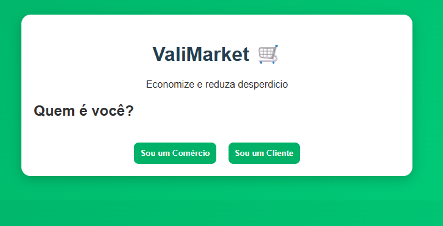
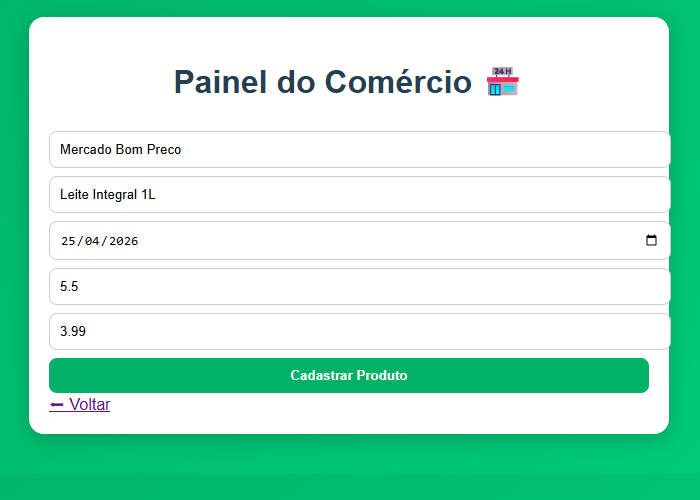
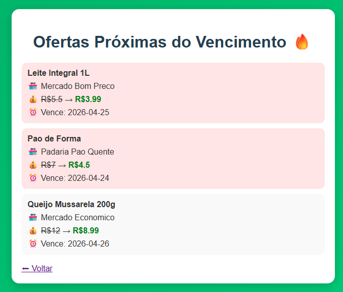

Reduzindo desperdício e gerando economia
Todos os dias, comércios perdem produtos por vencimento, gerando prejuízo financeiro e desperdício.
Consumidores querem economizar, mas não têm acesso fácil a essas oportunidades.
O ValiMarket conecta comércios e consumidores, permitindo vender produtos próximos do vencimento com desconto.

Tela inicial da plataforma

Cadastro de produtos pelo comércio

Visualização de ofertas pelo cliente
Solução simples, escalável e com potencial de integração com sistemas existentes.
Este projeto é um MVP focado na validação da ideia.
Reduz desperdício e promove economia utilizando tecnologia acessível.